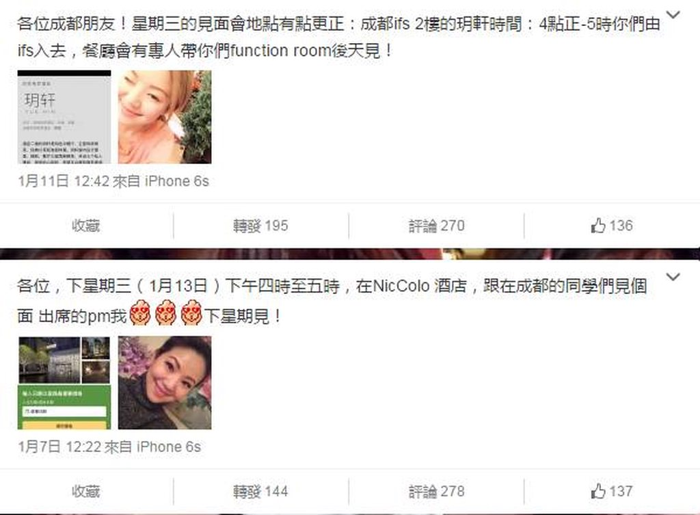
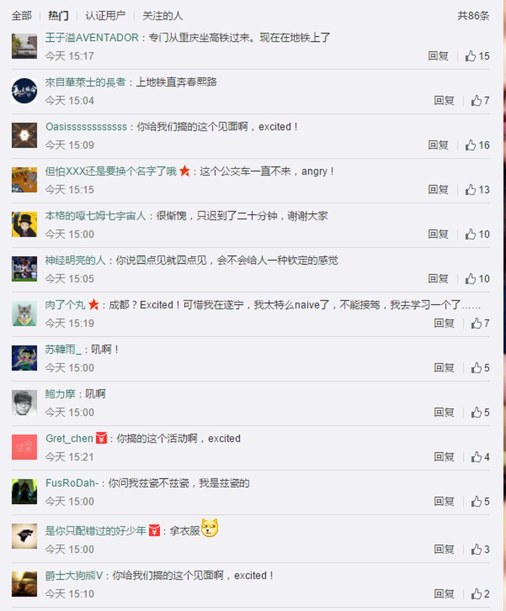
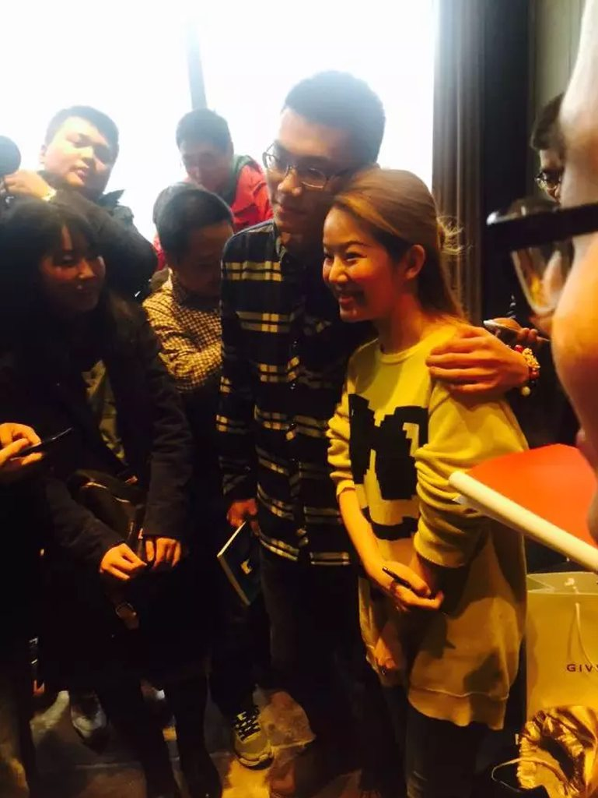
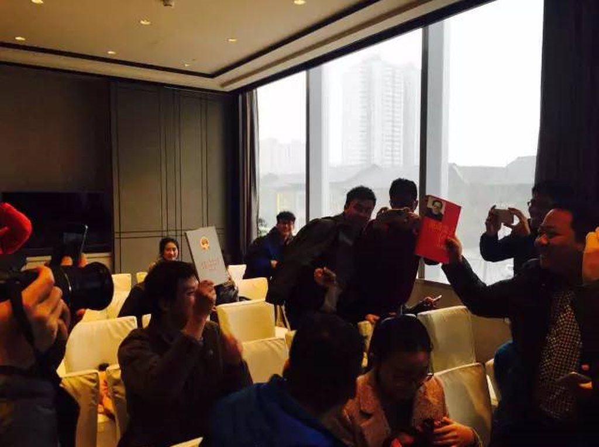

编者按：该文发布于2016年1月13日。
2000年10月，一名香港有线电视女记者因连续追问“中央钦定特首”的问题而使得江泽民大怒。这名成为那段“江泽民怒斥香港记者”知名视频的“被怒斥主角”就是张宝华。张宝华在新浪微博注册账号并认证之后，中文互联网“蛤丝现象”的兴起使得她的微博意料之外地成为了“蛤丝聚集地”，她发的任何一条微博下面几乎都有大量蛤丝的膜拜、调侃，她从起初的不知所谓，到坦然接受，最后甚至主动和微博上的蛤丝们用“膜蛤语录”互动，最后还组织了线下网友见面会。
2015年，江选研讨会作者黄薄码的文章香港记者到底跑的有多快?以幽默方式向读者详细介绍了“向长者提问的女记者”张宝华，也使得她在那次采访十余年后，被更多蛤丝们所认识。
相关阅读：
“膜蛤”指的是对前中国共产党中央委员会总书记、国家主席江泽民进行“膜拜”。“膜拜者”自称（也被称为）“蛤丝”，即“蛤的粉丝”。“膜蛤”一词中，“膜”具有多重含义，一方面有反讽意，即使用“捧”之形式，行“杀”之实质，看似是尊敬权威，实则是消解权威；另一方面，“膜”又回归本意，“蛤丝”对江泽民亦抱有或多或少的好感。《纽约时报》在一篇报道中援引一位中国影评人Magasa所述：“它（“膜蛤”）半真半假，具有讽刺性，但它反映了人们对过去的怀念，对现状的不满。“而半真半假正是“膜蛤”文化最大的特征。
2016年1月13日，香港媒体人张宝华因个人事务途径成都，提前在新浪微博召集网友聚会，而后见面会现场意外聚集几十名“蛤丝”，规模庞大，成为蛤丝们戏谑的“全球首届蛤丝大会”。
 
现场图片：

现场有蛤丝拿出《基本法》要求签名

现场视频：
张宝华（15年前，一个长者怒斥的香港女记者，现在已经是寰亚传媒集团高级副总裁）：
我很喜欢微博的朋友，他们年纪都很小，大概都是80后、90后，他们来到我的微博都是因为15年前的那件事情。我没想到这件事情，在15年后还很能引起很多朋友的关注。
我对这种情况很惊讶，没想到现在还能火。每天还有很多人通过微博私信我，过来问我一些问题。有的问念书念不好怎么办，有的问追女孩子追不到怎么办，形形色色的问题都有。
所以你一定要问我觉得烦不烦的话，坦白告诉你我不觉得烦。
我觉得他们挺可爱的，我很喜欢微博的朋友。他们每个人都很不一样，有些像你一样喊我“张老师”，还有一些喊我“宝华姐”。叫我“宝华姐”的人比较多，其实从小身边的朋友都喊我“宝姐姐”，我的感觉很好。他们有的在读大学，有的刚毕业，所以我肯定是他们的大姐姐，大他们很多岁。我对他们一点也不觉得烦。
宝华姐来到成都和蛤丝见面，现场蛤意盎然，蛤友们神魂颠倒，坐卧难安，大家都很excited！
（来源： 蛤友谭缘一线消息 1980青年学社）
其他网友详细现场记录 来源： 一个赛艇 （该微信公众号已遭屏蔽）
以下内容来自现场网友 @deidei 的记录：
非常有意思的一次见面会，膜蛤膜到线下也是醉了，成都此站可谓第一届蛤丝大会，有种既轻松又正式的感觉，毕竟还有人专门带来了基本法，甚至还有人从昆明专程飞机赶来。因为张宝华本人的高亲和力，与网友积极的互动，使得蛤丝这个偏小众的亚文化群体有了一次难得的线下聚集契机（毕竟不可能由蛤蛤组织）。
也许是和上班时间冲突，张宝华现场调查的时候，可以看到绝大多数在场者都是90后的大学生，男生占据九成以上的比例，现场粗略观察仅有3、4名女生。
张宝华在谈话中并没有聊到太多的政治议题，而是以“长者身份”向在座各位年轻人提出人生建议：在适合的年龄段多拍拖、注意锻炼强健的体魄（例如自己坚持长跑）、要耐得住人生的各种艰难挑战。
有媒体人士向张宝华提问：觉得自己工作特别没有成就感，整日被束缚手脚，该如何对待？张宝华回答说改变环境很艰难，可以尝试先不被改变和对环境有限改变，她以自己马拉松竞赛体验为例，也许现在身处一个体力瓶颈期，自觉无法继续，但一心要跑完全程就必须坚持。
有网友问16年前面对长者的心态是什么？张宝华回答说当时年轻，自己只是想尽到自己的责任，但是自己从来没有想过过去这么多年了，还会有那么多人记得她。又有网友追问现在做记者还有没有勇气提问最高领导人，张宝华坦言这个不是勇气的问题，而是责任的问题，很多时候你需要这么做。
还有现场网友询问张宝华，“蛤丝现象”得到了海内外时政中文群体的关注，成为一种不那么容易解释的现象级的政治文化现象，不同人对此的解读差异甚大，不知道张个人怎么看待？怎么解读？被迫圈入这种“膜蛤现象”的张有没有觉得困扰？张宝华并没有回答第一个问题，只是表示自己没有受到膜蛤的困扰，反而觉得自己能在陌生的城市召集到这么多的朋友而感到高兴。
一点自己的观察：蛤丝聚会从源头上讲应该算是有政治属性的圈子聚会，但是由于它独特的幽默属性，使得这样形态的线下聚会可以很大的消解敏感风险，但反过来也会消解它时政讨论的空间和严肃氛围，当然这一方面也和张宝华个人的主持和答问风格有关，总之这一次的聚会更多的像是一个轻松友好的粉丝见面会。蛤丝群体的复杂化也在这次聚会中得到体现，和很多媒体所结论的蛤丝约等于政治反对派、不满现实人士、热心时政人群不完全相同，从关注和讨论的内容可以看到，相当多的现场蛤丝其实并不政治感冒，他们更多的只是觉得“膜蛤”有趣而已，好玩且很酷，一个亚文化群体的不同个体中可能有一些东西是相似的，但也有一些东西是截然不同的。